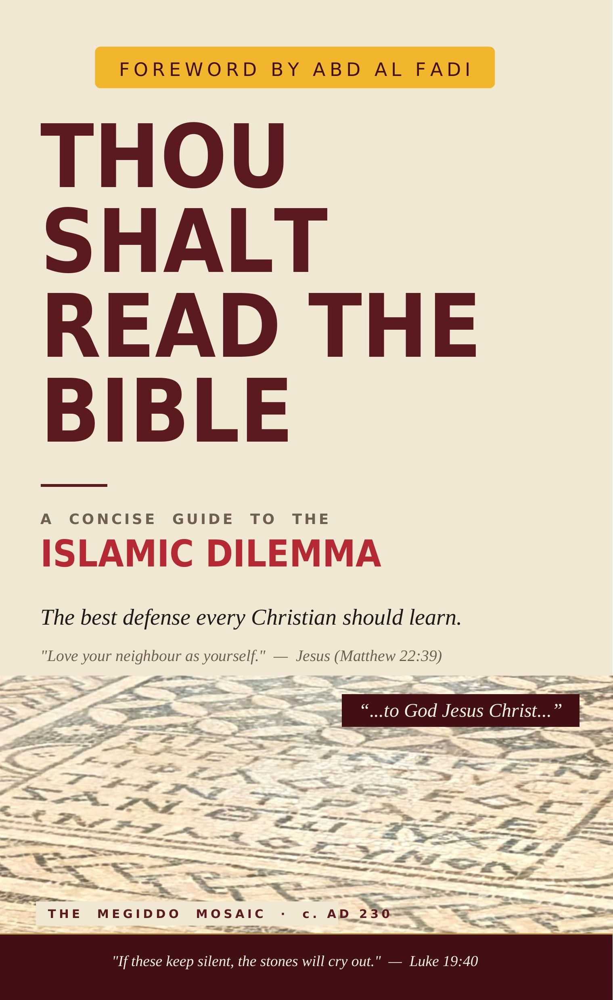

Weigh it fairly
We look at each question honestly, using its own primary texts and the historical record — no strawmen, no cheap shots.
Apologetics · Evidence · Honest Conversation
We love honest questions — and we believe faith can handle them. Here you'll find careful, friendly answers rooted in primary sources, history, and Scripture, always offered with gentleness and respect. The goal isn't to win an argument. It's to walk alongside you toward Jesus.
Featured · New Release

A Concise Guide to the Islamic Dilemma
by Suresh Paul · Foreword by Abd Al Fadi
The best defense every Christian should learn. A concise, source-driven walk through the dilemma at the heart of the debate: if the earlier Scriptures were corrupted, the case unravels — and if they were preserved, their witness stands. Foreword by Abd Al Fadi.
“…to God Jesus Christ…” — one of the earliest material witnesses to the worship of Jesus as God.
Endorsements · The Witnesses
Scholars, evangelists, and former Muslims who have weighed the argument for themselves.
Abd Al Fadi
Ex-Muslim Christian apologist · Author of the foreword
I kept hearing reports of its power and effectiveness — that literally hundreds of Muslims, after wrestling honestly with its implications, were leaving Islam. This book marks the first time this important argument has been presented in book form. Readers will find everything they need to understand the Islamic Dilemma and to share it clearly and effectively — a rigorous resource and a model for holding conviction and compassion together.
As someone who grew up in Iran pursuing martyrdom in jihad before a divine encounter with Jesus Christ, I know firsthand how powerfully the questions in this book can unsettle a sincere Muslim's certainties. Suresh Paul has done the Church a genuine service — exactly the tool Christians need to open a door to the Gospel for their Muslim friends and neighbors.
What a pleasant surprise! This small book is easy to read and easy to understand. It reveals what appears to be a deeply troubling contradiction in the Qur'an. I highly recommend it for any Christian wanting to start conversations with a Muslim friend.
“The Bible has been corrupted” is the objection that meets us at the very threshold. And yet the Qur'an itself speaks with deep regard for the Scriptures that came before it. This short and lucid book gathers those threads with clarity — a resource both accessible and quietly powerful, a faithful companion in the joyful task of bearing witness to the Triune God.
In a charitable and accessible style, Suresh Paul opens the pages of the Quran in a way that allows the Muslim and Christian reader alike to see what the Quran really says about the Bible. A practical tool for those frequent discussions about the Bible's reliability.
The Islamic Dilemma is the Achilles' heel of Islam and the Qur'an, and has proven to be a watertight and formidable argument. Suresh's book has made this argument accessible to the reader and given the Christian a powerful tool to use in evangelism to Muslims.
How We Do It
We look at each question honestly, using its own primary texts and the historical record — no strawmen, no cheap shots.
Manuscripts, archaeology, and the earliest witnesses — cited, dated, and easy to check for yourself.
A warm, well-grounded reason for the hope we have — offered gently, respectfully, and always in love.
What Guides Us
“Always be prepared to give an answer to everyone who asks you to give the reason for the hope that you have. But do this with gentleness and respect.”
1 Peter 3:15 · NIV
A talk, a Q&A, or a friendly chat over coffee — we'd love to join you. Come with any question.
Get in touchThis ministry runs on the kindness of people who care about the truth. Thank you for any support.
Buy us a coffee